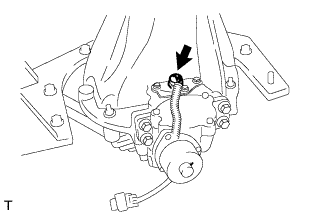
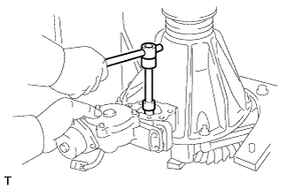
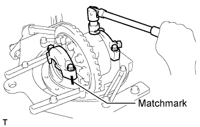
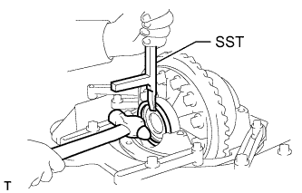
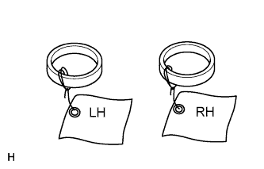
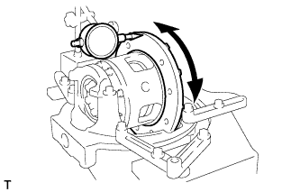
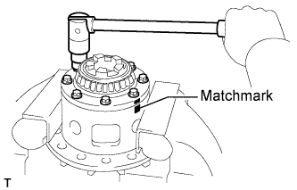
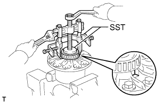
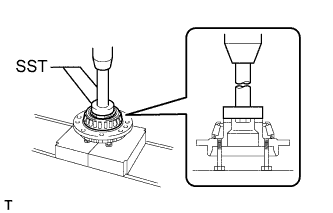

REAR DIFFERENTIAL CARRIER ASSEMBLY (w/ Differential Lock) > DISASSEMBLY |
| 1. INSPECT RUNOUT OF REAR DRIVE PINION COMPANION FLANGE REAR SUB-ASSEMBLY |
 |
Using a dial indicator, measure the vertical and lateral runout of the companion flange.
| Runout | Specified Condition |
| Vertical runout | 0.10 mm (0.00394 in.) |
| Lateral runout | 0.10 mm (0.00394 in.) |
| 2. INSPECT RUNOUT OF DIFFERENTIAL RING GEAR |
 |
Using a dial indicator, measure the runout of the ring gear.
| 3. INSPECT DIFFERENTIAL RING GEAR BACKLASH |
 |
Using a dial indicator, measure the backlash of the ring gear.
| 4. REMOVE NO. 1 TRANSFER INDICATOR SWITCH |
 |
Remove the switch and gasket.
| 5. REMOVE REAR DIFFERENTIAL LOCK COVER |
 |
Remove the 3 bolts.
Using a brass bar and hammer, tap on the cover to remove it.
| 6. REMOVE DIFFERENTIAL LOCK SHIFT ACTUATOR |
 |
Remove the 4 bolts.
 |
Remove the shift fork shaft bolt.
Using a screwdriver, pull out the actuator and remove the sleeve and shift fork.
| 7. REMOVE DRIVE PINION COMPANION FLANGE REAR NUT |
 |
Using SST and a hammer, unstake the nut.
 |
Using SST to hold the companion flange, remove the nut.
| 8. REMOVE REAR DRIVE PINION COMPANION FLANGE REAR SUB-ASSEMBLY |
 |
Using SST, remove the companion flange.
| 9. REMOVE REAR DIFFERENTIAL CARRIER OIL SEAL |
 |
Using SST, remove the oil seal.
| 10. REMOVE REAR DIFFERENTIAL DRIVE PINION OIL SLINGER |
| 11. REMOVE REAR DRIVE PINION FRONT TAPERED ROLLER BEARING |
 |
Using SST, remove the bearing (inner race).
| 12. REMOVE REAR DIFFERENTIAL CASE SUB-ASSEMBLY |
 |
Place matchmarks on the bearing caps and differential carrier.
Remove the 4 bolts and 2 bearing caps.
 |
Using SST and a hammer, remove the plate washers.
 |
Remove the differential case with the side bearing (outer race) from the differential carrier.
| 13. REMOVE DIFFERENTIAL DRIVE PINION |
| 14. REMOVE REAR DIFFERENTIAL DRIVE PINION BEARING SPACER |
| 15. REMOVE REAR DRIVE PINION REAR TAPERED ROLLER BEARING |
 |
Using SST and a press, press out the rear bearing (inner race) from the drive pinion.
| 16. REMOVE REAR DIFFERENTIAL DRIVE PINION PLATE WASHER |
| 17. REMOVE REAR DRIVE PINION FRONT TAPERED ROLLER BEARING |
 |
Using a brass bar and hammer, tap out the bearing (outer race).
| 18. REMOVE REAR DRIVE PINION REAR TAPERED ROLLER BEARING |
 |
Using a brass bar and hammer, tap out the bearing (outer race).
| 19. REMOVE DIFFERENTIAL RING GEAR |
 |
Place matchmarks on the ring gear and differential case.
Remove the 12 ring gear set bolts.
Using a plastic-faced hammer, tap on the ring gear to separate it from the differential case.
| 20. INSPECT RUNOUT OF DIFFERENTIAL CASE |
Place the bearing outer races on their respective bearings.
Install the assembled plate washers to the side bearing.
Install the differential case to the differential carrier.
Align the matchmarks on the bearing caps and differential carrier.
Install and uniformly tighten the 4 bolts a little at a time.
 |
Using a dial indicator, measure the differential case runout.
Remove the differential case.
| 21. DISASSEMBLE DIFFERENTIAL CASE |
 |
Place matchmarks on the differential case and differential cover.
Using a T10 "TORX" socket, remove the 5 set bolts and 3 pinion shaft pins.
Separate the cover and case.
Remove the 2 side gears, 2 side gear thrust washers, 4 pinion gears, 4 pinion gear thrust washers, 3 pinion shafts and holder from the differential case.
| 22. REMOVE REAR DIFFERENTIAL CASE BEARING |
 |
Using SST, remove the side bearing.
| 23. REMOVE REAR DIFFERENTIAL CASE BEARING |
 |
Using SST, 4 bolts and a press, remove the bearing.